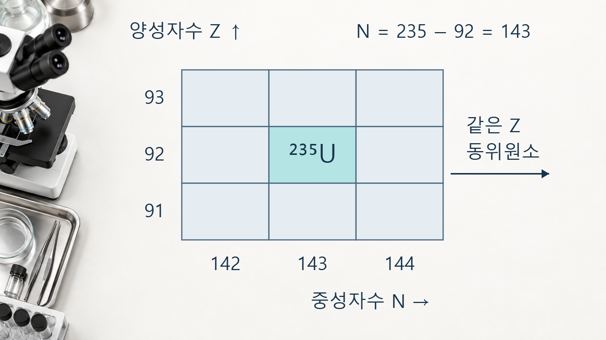
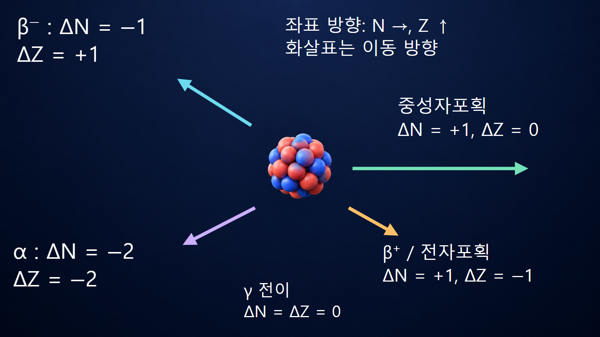

원자와 원자핵의 기초 · 010
핵종도 읽는 법
양성자수와 중성자수로 보는 핵종의 지도
핵종도는 일반적으로 가로축에 중성자수 N, 세로축에 양성자수 Z를 두고 각 핵종을 한 칸에 배치한 지도입니다. 인접한 칸으로의 이동은 핵반응이나 방사성붕괴에 따른 핵 조성 변화를 뜻합니다.
Z–N 좌표와 핵종기호
핵종 AZX에서 Z는 양성자수, A는 양성자와 중성자의 합인 질량수이며 N=A−Z입니다. 우라늄-235는 Z=92이므로 N=235−92=143인 좌표에 놓입니다. 같은 Z를 따라 배열된 핵종은 같은 원소의 동위원소이고, 같은 N을 갖는 핵종은 동중성자핵입니다. 같은 A를 갖는 핵종은 핵종도에서 대각선 방향의 동중핵 계열을 이룹니다.

안정핵 영역이 휘어지는 이유
가벼운 안정핵은 대체로 N≈Z 부근에 있지만 원자번호가 커질수록 양성자 사이의 쿨롱반발이 증가하므로 더 많은 중성자가 필요합니다. 따라서 안정핵 영역은 N=Z 직선에서 중성자수가 큰 방향으로 점차 휘어집니다. 안정 영역의 양쪽에는 베타붕괴로 더 안정한 조성을 향하는 핵종이 분포하고, 매우 무거운 핵에서는 알파붕괴와 자발핵분열도 중요해집니다.
베타붕괴의 대각선 이동
베타마이너스붕괴에서는 중성자 하나가 양성자로 바뀌어 ΔZ=+1, ΔN=−1이고 A는 유지됩니다. 탄소-14는 질소-14로 이동합니다. 베타플러스붕괴 또는 전자포획에서는 양성자가 중성자로 바뀌어 ΔZ=−1, ΔN=+1입니다. 그림의 화살표 방향은 핵종도마다 축 배치가 다르면 달라질 수 있으므로 방향을 외우기보다 ΔZ와 ΔN을 계산해야 합니다. 탄소-14의 (N,Z)=(8,6)은 질소-14의 (7,7)로 바뀝니다. 원자핵의 양성자수 자체는 바뀌지만 방출 전자의 전하까지 포함한 전체 전하는 보존됩니다.
알파붕괴·중성자포획·감마전이
알파붕괴는 양성자 2개와 중성자 2개를 방출하므로 ΔZ=−2, ΔN=−2, ΔA=−4입니다. 중성자포획은 Z를 유지한 채 N과 A가 각각 1 증가합니다. 감마전이는 같은 핵종의 들뜬상태가 낮은 에너지상태로 이동하므로 Z와 N이 모두 변하지 않습니다. 좌표 이동은 가능한 딸핵을 찾는 첫 단계이며 실제 경로는 Q값, 선택규칙, 반감기와 분기비로 확인합니다.

코발트-60 붕괴사슬의 예시
코발트-60은 Z=27, N=33입니다. 베타마이너스붕괴 후에는 Z=28, N=32인 니켈-60의 들뜬상태가 되며 A=60은 유지됩니다. 이어지는 감마전이는 핵종도상의 칸을 바꾸지 않고 같은 니켈-60 안에서 에너지만 낮춥니다. 따라서 핵종도에서 한 칸 이동한 베타붕괴와 같은 칸에 머무는 감마전이를 연속해서 읽으면, 방사선의 종류뿐 아니라 붕괴 전후의 핵 조성까지 함께 추적할 수 있습니다. 이 사례는 핵 조성의 변화와 같은 핵종 내부의 에너지상태 변화를 구분해야 함을 보여줍니다.
색상과 인접성의 해석 한계
핵종도마다 안정핵, 반감기, 주된 붕괴방식 또는 중성자단면적을 서로 다른 색으로 표시합니다. 반드시 범례와 자료 기준일을 확인해야 하며 색만으로 수치나 안정성을 단정해서는 안 됩니다. 두 칸이 이웃한다고 해서 반응이 쉽게 일어난다는 뜻도 아닙니다. 반응에는 입사입자, 에너지, 장벽과 선택규칙이 필요합니다.
| 도표 요소 | 읽는 방법 | 추가 확인자료 |
|---|---|---|
| 좌표 | Z와 N의 축 방향 | 핵종기호·질량수 |
| 색상 | 범례의 물리량과 구간 | 반감기·분기비 |
| 이동 | ΔZ·ΔN·ΔA | Q값·반응단면적 |
연료·방사화·붕괴열 계산의 활용
연료 연소에서는 중성자포획과 핵분열로 수백 개 핵종이 생성되고 붕괴합니다. 핵종도는 생성·붕괴망을 이해하는 지도이지만 정량 재고는 생성수율, 에너지별 단면적, 중성자속, 반감기와 시간에 따른 연립방정식으로 계산합니다. 정지 후 붕괴열, 방사화생성물, 사용후핵연료와 폐기물의 주요 핵종을 추적할 때 핵종도와 평가핵자료를 함께 사용합니다.
핵심 정리
핵종도는 Z와 N으로 핵종을 찾고 핵반응·붕괴에 따른 조성 변화를 추적하는 지도입니다. 축과 범례, 이동벡터를 읽은 뒤 Q값·반감기·분기비·단면적을 평가핵자료에서 확인해야 정성적 경로를 정량 해석으로 확장할 수 있습니다.